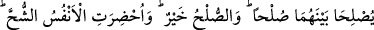
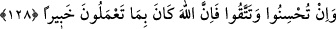

“Benimle alay mı ediyorsun?” diye çıkışınca Ebû Hanîfe: “Ben seninle alay etmekten
Allah’a sığınırım. Ben iki elbise satın almıştım. Bunlardan birini satıp sermâyesini
çıkarttım. Ancak dört dirhem eksiği kaldı. Böylece bu, bana dört dirheme kalmış oldu.”
dedikten sonra kadın elbiseyi dört dirheme aldı ve sevinçle dönüp gitti.
Sa’dî (k.s.) demiştir ki:
Ey genç! Gençliğinde bir pirin elini tut
Değilse yaşlanınca, elimi tut diye atılma
İki cihan için iyilik yapan kimse
Hakk’ın kullarına iyilik eder
Bil ki nefis, rûhun zevcesi mesâbesindedir. Nasıl ki Allah, erkeklere kadınların
haklarını yerine getirmeyi vâcip kıldıysa, sâdık tâlibe de nefsin haklarını yerine
getirmeyi vâcip kılmıştır. Nitekim gecesini devamlı ibâdetle, gündüzünü de oruçla
geçirerek nefsiyle mücâhede eden Abdullah b. Amr’a Rasûlullah (s.a.v.): “Muhakkak
ki nefsinin de senin üzerinde hakkı vardır. Oruç da tut, iftar da et. Gece ibâdet de et,
uykunu da uyu.”[171] Sıkı riyâzat seyrden alıkor. Rasûlullah (s.a.v.) şöyle buyurmuştur:
“Muhakkak ki bu din metîndir (sert ve güçlüdür). Onun hakkında yumuşaklıkla
hareket edin.”[172] Yâni, nefislerinize güçleri yetmeyecek şeyleri yüklemeyin ki, aciz
kalıp da dini ve ameli terketmeyesiniz.
Arap atı süratle iki seğirtti mi yorulur kalır
Deve ağır ağır gider gece gündüz, ama asla yorulmaz
Peygamber (s.a.v.) Efendimiz, nefsinin hakkını vermede orta yolu tutar ve son derece
adâletli davranırdı. Bâzen oruç tutar, bâzen iftar eder, gecenin bir kısmında ibâdete
kalkar, bir kısmında yatar, kadınlarla evlenir, bâzı zamanlar, tatlı, bal, tavuk ne bulursa
yer, bâzen de acıkır ve açlığından dolayı karnına taş bağlardı.
Ey gafil insan! Bineğine ve yoluna dikkat et. Hevânın emrine girmekten sakın. Âhirete
göç etmeden önce faydalı işler yapmaya çalış. Söylediğin ve yaptığın şeyde nefsini
hesaba çek. Çünkü Allah Teâlâ her şeyi bilen ve her şeyi ihata edendir. İfrat ve tefritten
de kaçın.